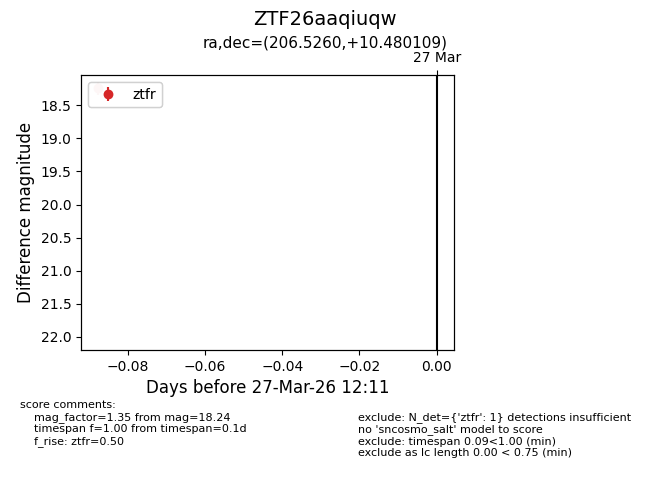
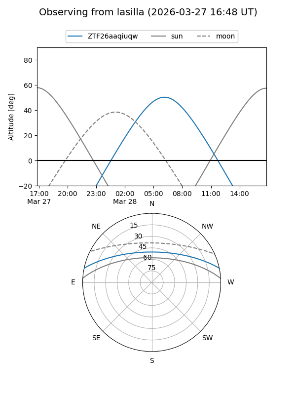
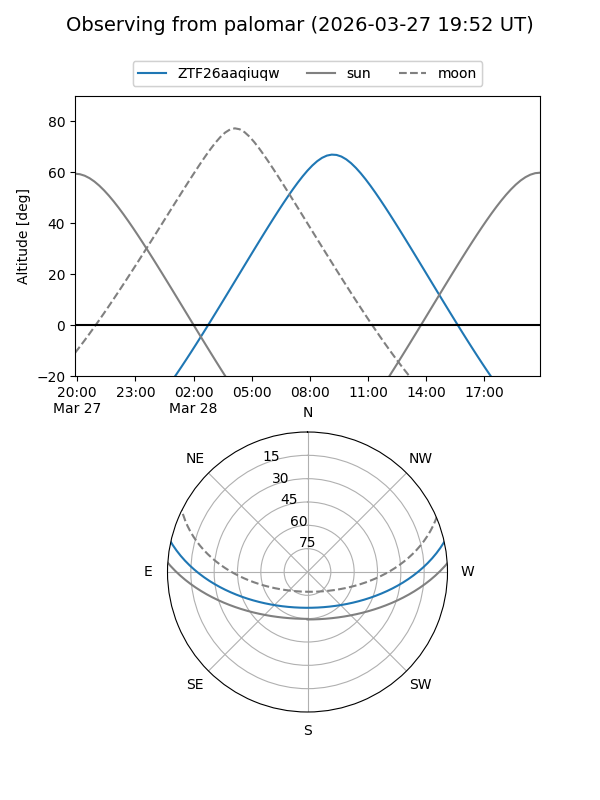

ZTF26aaqiuqw
Target ZTF26aaqiuqw at 2026-03-27 12:15
Aliases and brokers:
FINK: link
Lasair: link
ALeRCE: link
alt names
ZTF26aaqiuqw (ztf,fink_ztf)
Coordinates:
equatorial (ra, dec) = 206.5260,+10.48011
equatorial (HMS+DMS) = 13:46:06.24,+10:28:48.39
galactic (l, b) = (343.2478,+68.95594)
Flags:
Photometry:
last ztfr=18.24
1 ztfr detections
Lightcurve

Visibility


Additional plots